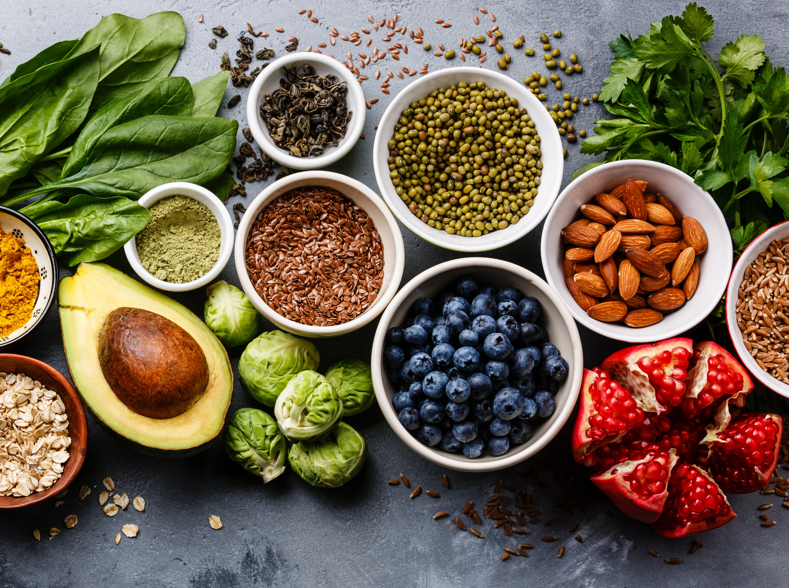

All about superfoods
Empowering your day with some extra power
Superfoods are foods — mostly plant-based but also some fish and dairy — that are thought to be nutritionally dense and thus good for one's health. Blueberries, salmon, kale and acai are just a few examples of foods that have garnered the "superfood" label. However, there are no set criteria for determining what is and what is not a superfood, according to the American Heart Association. "Superfoods don't have their own food group," said Despina Hyde, a registered dietician with the weight management program at New York University's Langone Medical Center. "As a dietician, I think 'superfood' is more of a marketing term for foods that have health benefits."
TOP Producers of SuperFoods
- China
- USA
- Brazil
Fun Facts
- Superfood is great!
- Superfood is healthy
- It is a misconception that superfood makes you stronger